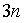
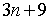
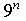
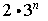
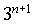

Item: tExplicitGeometric2a
Stem:
The first four terms of a geometric sequence are given below.
Choose the algebraic expression that represents the nth term in this sequence.
9, 27, 81, 243, . . .
Options:





Key:
- Observable: 1.
Score: 0;
Evidence Value: 0.
-
Student:Sorry, that's incorrect. Consider the case where n = 1. Then the expression you selected evaluates to 3(1) = 3. But the first term in the sequence is 9, not 3, so this expression can't describe the sequence.
-
Teacher:The student got this item incorrect.
- Observable: 2.
Score: 0;
Evidence Value: 0.
-
Student:Sorry, that's incorrect. Consider the case where n = 1. Then the expression you selected evaluates to 3(1) + 9 = 12. But the first term in the sequence is 9, not 12, so this expression can't describe the sequence.
-
Teacher:The student got this item incorrect.
- Observable: 3.
Score: 0;
Evidence Value: 0.
-
Student:Sorry, that's incorrect. Although this expression works for the first term, it does not work in general. Consider the case where n = 2. Then the expression you selected evaluates to 9sup2 = 81. But the 2nd term in this sequence is 27, not 81. It is a good idea to verify your expression by substituting several different values of n.
-
Teacher:The student got this item incorrect.
- Observable: 4.
Score: 0;
Evidence Value: 0.
-
Student:Sorry, that's incorrect. Consider the case where n = 1. Then the expression you selected evaluates to 2 * 3sup1 = 2 * 3 = 6. But the first term in the sequence is 9, not 6, so this expression can't describe the sequence.
-
Teacher:The student got this item incorrect.
- Observable: 5.
Score: 1;
Evidence Value: 1.
-
Student:Right! You have identified the correct expression for the nth term.
-
Teacher:The student successfully identified the correct explicit formula for an increasing geometric sequence with integer terms.
Metadata:
Item Node: tExplicitGeometric2a,
Difficulty: 2.
Proficiencies: ExplicitGeometric.